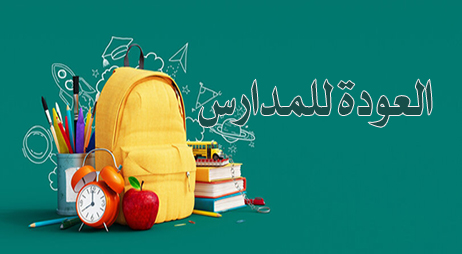

وسم: الدراسة
الإضاءات
منذ 2023-09-03
عام دراسي جديد

انقضت إجازة الصيف وطويت صحيفتها، وأغلق كتابها، وذهبت كما ذهبت مواسم كثيرة حاملة بين طيَّاتها شهادة على العباد أو لهم.. فمن أحسن فلنفسه، ومن أساء فعليها. وبدأ أبناؤنا وبدأنا معهم عاما دراسيا جديدا ... المزيد

محمد بن إبراهيم الحمد
الكتب
منذ 2023-06-16

رسالة إلى طالب نجيب
نسختان ملونة وأبيض وأسود ... المزيد

عبد الوهاب بن ناصر الطريري
الدروس
منذ 2022-09-30


من الطفولة إلى الجامعة إلى الخطابة (2/1)
(1) من الطفولة إلى الجامعة (2) من الجامعة إلى الخطابة
المدة: 1:02:26
أيمن الشعبان
الدروس
منذ 2022-09-02
وصايا مهمة مع بداية العام الدراسي
الجميع يطمحون لتحقيق أهدافهم، وهذا مرتبط بمسارين مهمين لابد من التعرف عليهما للوصول إلى الهدف المنشود


صلاح بن محمد البدير
الدروس
منذ 2022-06-17
(9) مشكلة رفض الدراسة
حالــة مــن القلــق تصيــب الطفــل تجعلــه يرفــض الذهــاب الى المدرسـة وخاصـة في بدايـة العـام الـدراسي.. ... المزيد
الكتب
منذ 2021-12-28

الابتعاث تاريخه وآثاره
تأليف: د. عبد العزيز بن أحمد البداح ... المزيد
أيمن الشعبان
الدروس
منذ 2021-09-10
تنبيهات مهمة على طريق التفوق الدراسي
أمور ينبغي مراعاتها واستحضارها منها: | الإخلاص والصدق | شكر النعمة | الدعاء وطلب المعونة من الله | التوكل على الله | العمل بالعلم | مصاحبة القرآن | التأني | اغتنام الأوقات والحرص والجد والاجتهاد والمثابرة |.
الاستشارات
منذ 2021-03-01
اختيار المسار الدراسي
السلام عليكم ورحمة الله وبركاته.
أنا طالبة التحقتُ بالجامعة وكنتُ قد عَقدْتُ العزمَ على أن ألتَحِق بالمسار الإداريِّ، لكنني وبسبب قلَّة خِبْرتِي التحقتُ بالمسار العلميِّ مِن جديد وتَمَّ قبولي فيه.
كنتُ أُفكِّر كثيرًا في التحْويل إلى المسار الذي أردتُه، لكن عائلتي أشارتْ عليَّ أن أستمر في مساري، وانتهى الفصل الدراسي الأول ثم بدأ الفصل الدراسي الثاني وكانتْ رغبتي في التحويل تُراودني وتُؤثر على همتي في الدراسة وعلى علاماتي!
كنتُ شديدةَ الحَيرة طوال الوقت، وشعرتُ بالندَم، حيث إنني قد سبق وقرأتُ الكثير حول أهميَّة تحديد المسار الدراسي، وغير ذلك من الأمور المتعلقة بالجامعة.
المشكلة أن التحويل بين المسار الأدبي والعلمي لا يُمكن أن يتمَّ إلاَّ إذا قمتُ بالتسجيل من جديد في الجامعة، وهذا يعني ضياع سنة كاملة، وأنا على وشك إتمام الفصل الدراسي الثاني.
قُمتُ بتقديم رغبات التخصُّص في الجامعة، لكن لم يَرُقْ لي منها شيءٌ، فمُيولي أدبية، ولا أجد نفسي في المجالات العلمية؛ من طبٍّ، وفيزياء، وكيمياء، وغيرها، فقمتُ باستبعاد أكثر الخيارات، واستقرَّ رأيي على اختيار التصميم الداخلي!
قرأتُ عن التخصُّص، لكنني لا أشعُر بأنه في دائرة اهتماماتي، قد أجد نفسي مهتمَّةً أكثر بالتصاميم المِعمارية، ولكن الاهتمام الدقيق بالتفاصيل المتعلِّقة بالتأثيث وتصميم الديكور لا يُثير اهتمامي، علمًا بأنني قد أَجْرَيْتُ عدة اختبارات شخصية، وأظهرتِ النتائجُ أن التصميم الداخلي يُناسب شخصيتي.
بشكلٍ عامٍّ لديَّ مُيول فنية قوية، فهل أحاول أن أجدَ تخصصًا يروق لي في المجال العلمي؟ وهل يمكنني أن أستندَ على حبي القديم للأحياء؟ وهل سيوصلني هذا لما أرغب فيه؟
كذلك أجد نفسي جيدةً في المجال اللغوي ومجال التنمية والتربية، وكلها تروق لي، لكن لَم أُحَدِّد بعدُ في أيِّ تخصصٍ أدبيٍّ أريد أن أكونَ، وأشعُر أنني عالقة، فهل أستسلم لما ساقتْني أفعالي إليه؟ أو أحاول جاهدةً أن أتخصَّص في المجال الذي يُعجبني مهما كان الثمَنُ؟
أرجو أن تُشيروا عليَّ وأن تُخبروني بما يجب أن أفعلَ في المستقبل؛ حتى لا أقعَ في الخطأ ذاته في القرارات المستقبلية
وجزاكم الله خيرًا
ابنتي الكريمة، السلام عليكم ورحمة الله تعالى وبركاته.عزيزتي، سأبدأ معك مِن حيث أنهيتِ رسالتك في إشارتك بعدم تحديدك حتى الآن لأيِّ تخصصٍ أدبيٍّ ترغبين في الالْتِحاق به - في حال أعدتِ تسجيلك في الفرع الأدبي - وبأن كل التخصُّصات الأدبية تَروق لك، وهو الأمرُ الذي أراه يُمَثِّل جوهر ... أكمل القراءة

الشبكة الإسلامية
الفتاوى
منذ 2020-12-25
زواج الفتاة أم سفرها لإتمام دراستها
لا أدري كيف أشرح لكم مشكلتي، فأنا طبيبة، وعمري 26 سنة، ولم أتزوج بعد، وحصلت على بعثة لإكمال دراستي التخصصية في الخارج - ولله الحمد -ومشكلتي أنني محتارة: هل أذهب إلى الخارج للدراسة أم لا؟ لأني أخاف إن ذهبت أن يفوتني قطار الزواج، علمًا أن دراستي تتراوح بين أربع إلى خمس سنوات، ولا يوجد حاليًا أي زوج مناسب تقدم لخطبتي، وفي نفس الوقت لا أريد أن أوقف دراستي أملًا بالزواج؛ لأني لا أضمن أنني سأتزوج، وبذلك سأضيع من يدي فرصة الابتعاث، وكأنني أتمسك بحبال خيالية، وهذا الأمر يشغل تفكيري ليل نهار، ولا أعلم ماذا أفعل، وماذا أقرر، وأردت مشورتكم وأخذ رأيكم في هذا الموضوع: هل أترك دراستي بهدف الزواج وانتظار الزوج أم لا؟ مع العلم أني صليت صلاة الاستخارة أكثر من مرة بخصوص هذا الموضوع، ولكم مني جزيل الشكر والتقدير.
الحمد لله والصلاة والسلام على رسول الله وعلى آله وصحبه، أما بعد: فالذي ننصحك به إذا كان سفرك قد يفوت عليك فرصة الزواج ألا تسافري، وأن تبقي في بلدك - لعل الله يرزقك زوجًا صالحًا -، وهذا على فرض أن سفرك لهذه البعثة مباح لا يشتمل على مخالفات شرعية، أما إذا كان السفر مشتملًا على مخالفات شرعية، فهو ... أكمل القراءة

سليمان بن عبد الله الماجد
فقه البر
منذ 2020-06-14

(15) هل تلزم طاعة الوالدين في دخول تخصص لا يرغب فيه الولد
إجابات فقهية وتربوية للشيوخ د. محمد الحمد / د. سعد الخثلان / د. سليمان الماجد على أسئلة جوهرية في علاقات الوالدين بالأولاد والعكس.
المدة: 7:53
الكتب
منذ 2019-04-09

المجلات العلمية المحكمة في الجامعات السعودية
التباين في آراء المحكمين في المجلات العلمية الأسباب والحلولhttps://ar.islamway.net/lesson/201785 ... المزيد
شخصيات قد تهتم بمتابَعتها
-

إبراهيم بن عبد الله الدويش
المشاهدات 2,496,119 -
علي بن عبد الرحمن الحذيفي
المشاهدات 458,879 -
سعود بن إبراهيم الشريم
المشاهدات 729,165 -
صلاح بن محمد البدير
المشاهدات 155,401